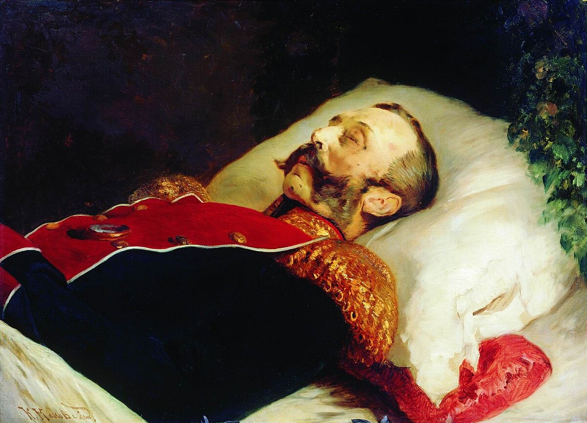
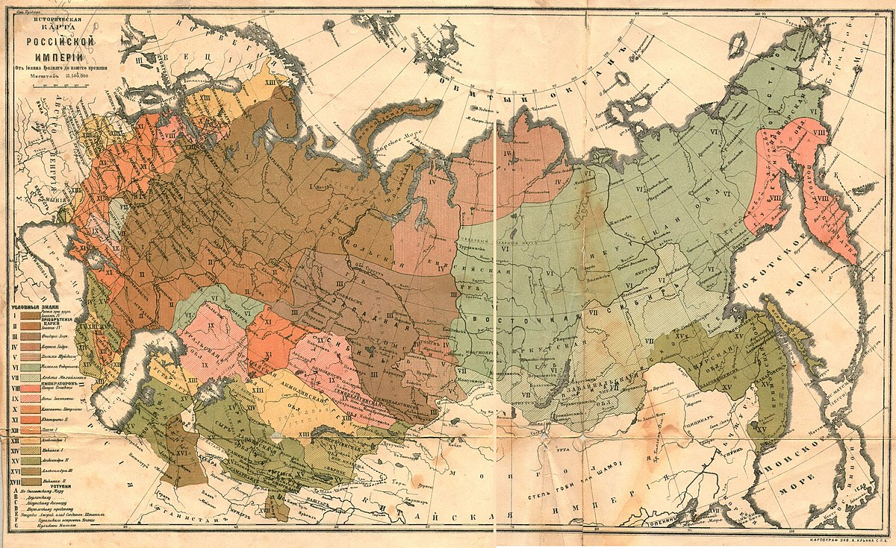

Народники
Участники общественного движения в Российской империи второй половины XIX века. Они выступали за социальную справедливость и свержение самодержавия, верили, что крестьянская община станет основой социализма, и звали народ к борьбе.

Последний день Александра II
Маршрут царя 1 марта 1881 года по Петербургу: от Зимнего дворца до места покушения.
Открыть маршрут
Где действовали народники
Центральная Россия, Поволжье и Украина: регионы, где работало движение.
Открыть карту